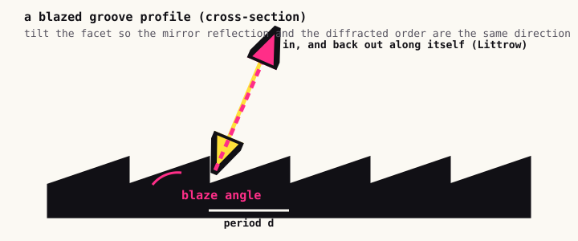
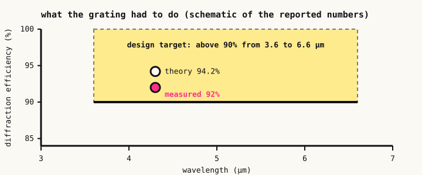

Bending light for a living: mid-IR gratings for ultrafast lasers
My first real research was in physics, in optics, and I did it for years, so it deserves a proper write-up. This is the project I spent the most time on: making a piece of patterned glass and metal that bends mid-infrared light very efficiently, so that an ultrafast laser can be amplified without destroying itself.
1. Why anyone needs a grating
Ultrafast lasers fire pulses a few hundred femtoseconds long. If you try to amplify one of those pulses directly, the peak power is so high that it destroys the amplifier. The fix, which won a Nobel Prize in 2018, is called chirped pulse amplification: stretch the pulse in time so its power is spread out, amplify the long pulse safely, and then compress it back to its original duration.
The stretcher and the compressor are both built from diffraction gratings. A grating is a surface with a periodic pattern fine enough to send each wavelength in a slightly different direction. The pulse is made of many wavelengths, so a pair of gratings can make the short-wavelength light travel a different distance than the long-wavelength light, which stretches it, and the mirror-image arrangement undoes it.
That makes the grating the weak point of the whole system. Light hits the gratings several times in a stretcher and again in a compressor, so even a few percent of loss per bounce compounds into a large loss of energy. The goal is a grating that sends nearly all the light into one diffracted order, over as wide a band of wavelengths as possible.
The grating equation
All of the physics fits in one line. Light of wavelength λ arriving at angle θᵢ on a grating of period d leaves in order m at
sin θₘ = sin θᵢ + mλ/d
Drag the sliders. Only orders where sin θ stays between −1 and 1 propagate. A grating with the wrong period for your wavelength sends the light into orders you don't want, or into none at all.
Which order gets the energy is decided by the shape of the groove.
2. What "blazed" means
If the surface is a simple sinusoidal ripple, the light is split among many orders and you lose most of it. A blazed grating has a sawtooth profile: each groove is a tilted flat facet. If you tilt the facet to the right angle, the mirror reflection off the facet points in exactly the same direction as the diffracted order you want. The facet then works like a tiny mirror aimed at that order, and nearly all of the light goes there.

This is easy to say and hard to build, especially for mid-infrared light. Conventional manufacturing for gratings is mechanical ruling, where a diamond tool drags grooves across a surface, and holographic recording, where interference fringes expose a photosensitive layer. Both struggle to produce the accurate sawtooth profile that a broadband, high-efficiency mid-IR grating needs: ruled grooves have tool and surface roughness, and holographic ones tend toward rounded sinusoidal profiles.
3. Our approach
The goal of the project was a grating for a 100-femtosecond laser at 4.3 µm that stayed efficient across a very wide band, with tolerance for that pulse's own spectrum.
From design to a working grating. Each step constrains the one before it, which is why putting the fabrication limits into the design simulation mattered so much.
Design. We ran a global optimization over the groove geometry and the coating stack for efficiency above 90% over a very wide range, 3.6 to 6.6 µm. The search space has lots of local optima, which is why a global method matters here.
Fabrication. Instead of ruling or holography, we combined electron-beam lithography with anisotropic wet etching. The lithography writes a precise pattern. The anisotropic etch then eats the material along crystal planes at very different rates in different directions, which is what makes the facets come out smooth and flat at a fixed angle, the near-perfect blazed grooves that the other methods struggle to produce. We developed this process with the Penn State nanofabrication lab, and it improved efficiency by about 30%.
Coating. A grating at these energies has to survive the laser. We used a hybrid metal-dielectric coating, gold plus alumina, and optimized its thickness to cut absorption and to raise the laser-induced damage threshold, the intensity at which the surface is destroyed.
Testing. We measured prototypes at the target 4.3 µm, tunable over about 0.2 µm. The best sample reached 92% diffraction efficiency, against a theoretical maximum for the design of 94.2%.

4. The surprises, and why simulations lie
Two things stand out when I look back at this project.
A feature found in simulation. Working in simulation, I independently discovered a "double-blazing" groove feature, an extra structure in the profile that widened the usable bandwidth by roughly 50% and raised the efficiency by about 20%. It's the kind of result you only get by searching a large design space with a computer and then working out why a candidate is good.
Putting the constraints in the model. A design optimizer will happily propose a groove that no etch can produce. Once the fabrication limits were built directly into the design simulations, prototype iterations dropped from 7 to 2 and manufacturing error fell by about 80%. That's the lesson I carry to every domain since: put the constraints of reality into the model rather than discovering them at the bench.
The gratings from this work are now in use at five or more national labs, supporting over $1.3 million of R&D contracts. It was published in Optical Materials Express, with a companion paper at SPIE on extending the design to single-cycle infrared lasers.
What I took from it
Optics taught me to distrust my own simulations, and to treat the real world as the final judge. That instinct, that an expensive, honest measurement is what actually tells you the truth and everything else is a guess about it, is the thread that runs through everything I do now, from molecule design to AI for science with wet-lab feedback. I just didn't know yet that I was practicing it.